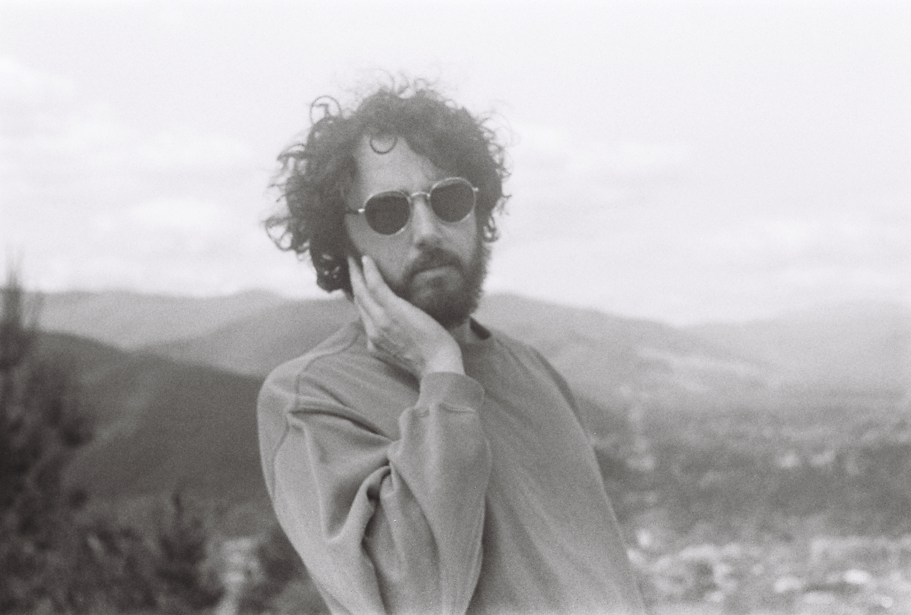

If you are veiwing this page, you've likely been reffered here by a QR code on a crumpled peice of A4 paper, presented to you by a tired-looking musician.
Don't be off-put by his aloof manner, he's a pussycat.
Will Chittick is a solo singer songwriter from Port Kembla, Australia, previously known for fronting surf-psyche band the Chitticks.
In 2014 he began developing solo material, honing his skills busking on the streets of the NSW South Coast.
With a deep affection for artists such as Billy Bragg, the Dirty Three, Stella Donnelly and Cat Power, his songs combine personal narratives with haunting loop-layered melodies that push the timbral boundaries of his humble acoustic guitar.
His song Hollow Day (released by Le Boogie Records), has been played over 9000+ times on Soundcloud and he has supported the likes of Steve Smyth, Jepp and Depp and Ben Wright Smith as well as regularly performing at the Port Kembla Street Festival.